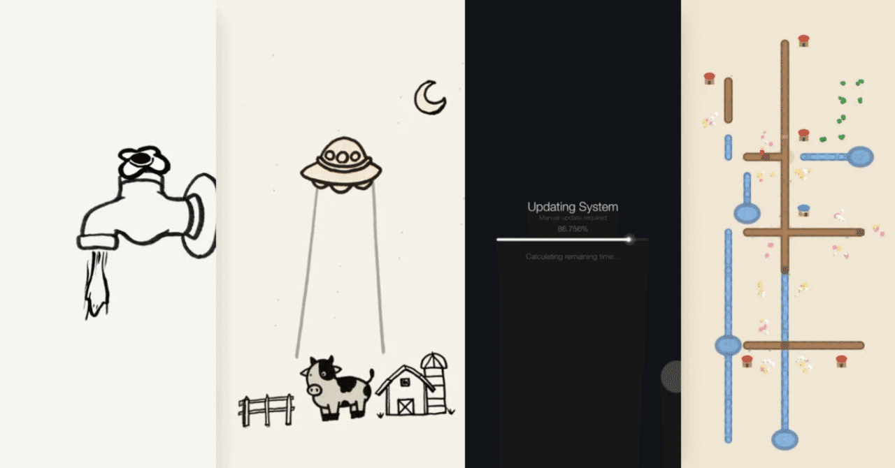
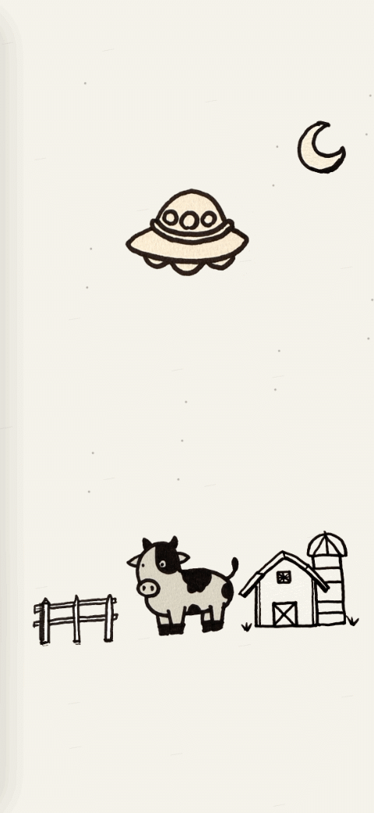
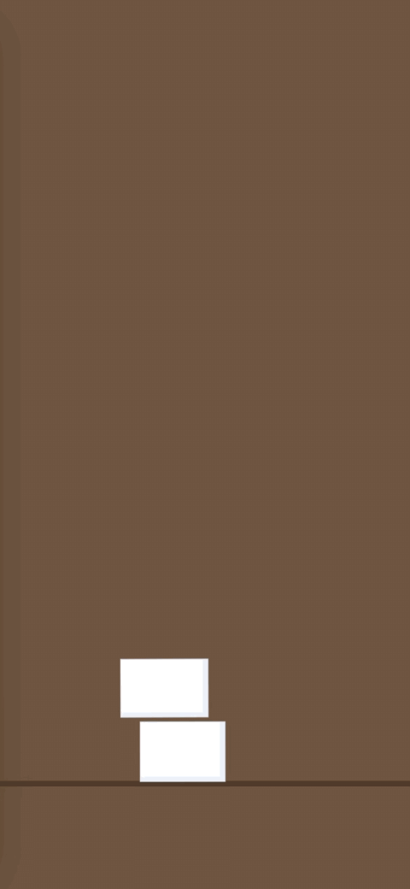
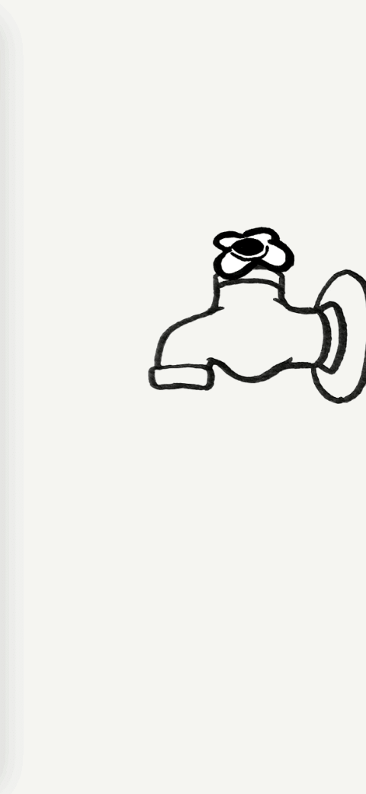
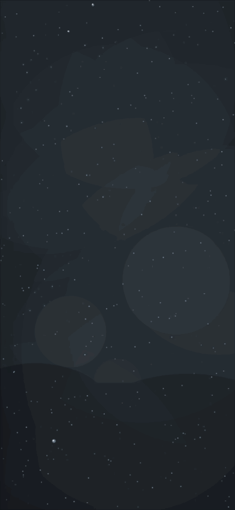
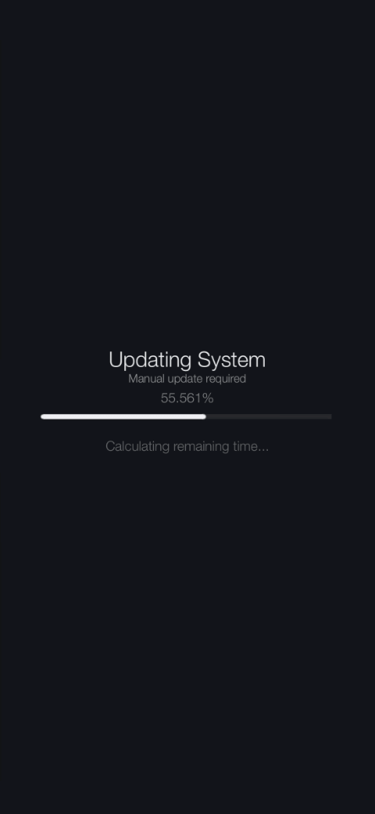
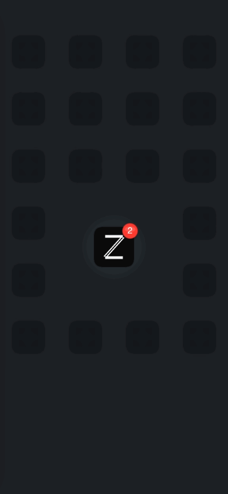
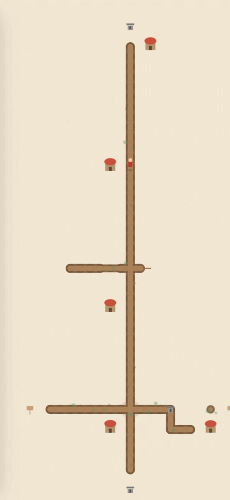
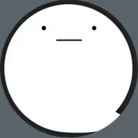

ひねる、積む、なぞる。触れるらくがきの話
最近、ゲーム未満、アプリ未満の
「#触れるらくがき」をつくっています。
画面を傾ける、なぞる、ひっぱる、ただ触る。
それだけのものです。
何かの役に立つわけではないけど、触ったときに少しだけ気持ちいいようなものを作りたいと思っています。
その中から、私が気に入っているものをいくつかお見せしたいと思います。
１．牛吸い【吸う】
牛がUFOに連れ去られるというモチーフは定番ですが、
「もし、宇宙人が牛そのものではなく、牛の模様だけが欲しかったとしたら…」という妄想から生まれました。
あえてアナログな質感を残しています。

２．豆腐タワー【積む】
豆腐のぷるぷる感と、生姜、ねぎ、鰹節のような調味料の素材感をプログラムの中でどう作れるだろうという好奇心から始まりました。
それぞれの調味料ごとの動きや積もっていくバランスを調整するのが楽しかったです。

３．蛇口おばけ【ひねる】
蛇口をひねっておばけが出てきたら面白いな、という発想をそのまま形にしてみました。ひねるとすぐに出てくるのではなく、一瞬間があってひょこっと出てくる感じがかわいいです。
閉じるとすぐに引っ込みます。

４．窓【書く】
雨の日に曇った窓に落書きするのが好きでした。書き終わりに雨粒が集まり、つーっと垂れていくあの感じが好きです。
なんとなく相合い傘を書いてみたくなりました。

５．手動アップデート【引っ張る】
世の中のアプリが寝ている間に自動更新される中、自分で一生懸命バーを引っ張らないといけないシステムがあったら嫌だな、と思い作ってみました。
やっぱり嫌でした。

６．増殖通知【増える】
通知バッジが付くとどうしてもアプリを起動したくなりますが、アプリを起動しないためにはどうしようと考えたところ、通知自体が増えればいいのではないかという結論に至りました。
画面が埋まっていくのが怖いです。

７．なぞる地図【なぞる】
落書きのように画面をなぞるだけで、自分だけのマップがつくれたら面白いなと思って作ってみました。
道が出来たり、川が出来たり、いつの間にか街のようになっていきます。
触っているだけでワクワクします。

これから何処に向かうのか、まだ分かりません。
いつか、こういう手触りを集めていった先に、何かが繋がっていく気がしています。
また増えたらまとめてみます。
よければ、Xの方も覗いてみてください。

はままぁ (@sukimastock) on X自分専用アプリ開発｜noteで開発記録｜ コーヒー工場タイマー／焼き鳥ゲーム／#触れるらくがき アプリ一覧：https://t.co/dsTsYYLEBV